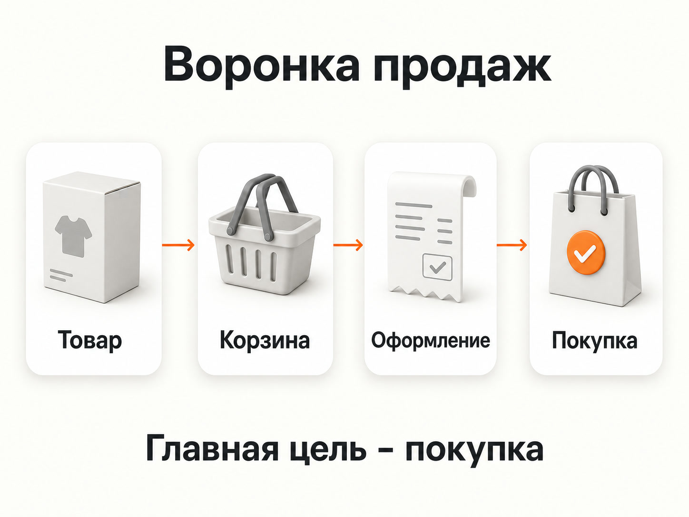
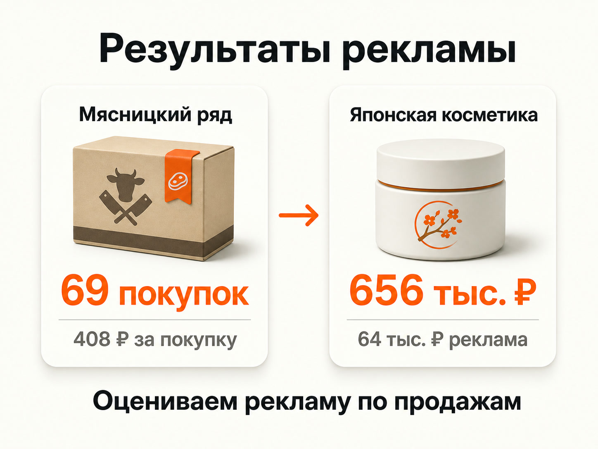

Блог о платном трафике
Яндекс Директ для интернет-магазина: как настроить рекламу на продажи
Яндекс Директ для интернет-магазина я бы строил вокруг трех вещей: товарных данных, нормальной аналитики и оптимизации под реальные покупки. Если просто привести трафик на каталог и смотреть на клики, можно получить красивую статистику без нормальной экономики.
У интернет-магазина есть преимущество перед многими другими типами бизнеса: системе можно передавать данные о конкретных товарах, ценах, категориях, наличии и фактической выручке. За счет этого Директ способен автоматически формировать товарные объявления и оптимизировать кампании под покупки или заданную долю рекламных расходов.
Что нужно подготовить до запуска рекламы
Первый этап находится вообще не в рекламном кабинете. Сначала я смотрю на экономику магазина и сам сайт.
Нужно определить:
- какие категории товаров приоритетны;
- какая у них маржинальность;
- сколько магазин может платить за заказ;
- какой ДРР допустим;
- какие товары есть в наличии;
- куда можно доставлять заказы;
- какие категории можно масштабировать, а какие экономически невыгодно активно рекламировать.
Если на товаре магазин зарабатывает 500 рублей, бессмысленно стабильно покупать заказы по 800 рублей только потому, что кампания показывает хороший CTR.
Поэтому для e-commerce стоимость клика обычно является второстепенным показателем. В конечном счете меня интересуют покупки, стоимость заказа, выручка и ДРР.
Прогноз бюджета Яндекс Директ: как рассчитать расходы, клики и заявки
Сам сайт тоже нужно пройти глазами покупателя. Проверяю карточки товаров, цены, наличие, доставку, мобильную версию, корзину и оформление заказа. Особенно полезно самостоятельно пройти весь путь от рекламной посадочной страницы до успешной покупки.
Аналитика интернет-магазина в Яндекс Метрике
До запуска рекламы на сайте должна нормально работать Яндекс Метрика и электронная коммерция.
Для магазина полезно видеть всю воронку:
- Просмотр товара.
- Добавление в корзину.
- Начало оформления.
- Покупка.
Основная цель рекламы при достаточном количестве данных - сама покупка. Промежуточные действия нужны для анализа воронки и в отдельных случаях могут использоваться как дополнительные сигналы.
Яндекс также рекомендует для e-commerce передавать данные электронной коммерции. При наличии информации о доходе кампанию можно оценивать и оптимизировать по ДРР, а не только по фиксированной стоимости конверсии.
Это особенно полезно магазину с разным средним чеком. Заказ на 2 000 рублей и заказ на 30 000 рублей формально являются одной конверсией, но их ценность для бизнеса совершенно разная.
Конверсия в Яндекс Директ: что это и как ее считать

Товарный фид - основа рекламы большого ассортимента
Если в магазине сотни или тысячи позиций, создавать отдельные объявления вручную нет смысла.
Для этого используется товарный фид - структурированный файл с информацией об ассортименте. В него могут передаваться название товара, цена, изображение, ссылка, категория, производитель, наличие и другие параметры.
Директ использует эти данные для автоматического формирования товарной рекламы. Для классического интернет-магазина Яндекс рекомендует YML как приоритетный формат фида.
Я предпочитаю автоматически обновляемый фид по ссылке. Если в магазине меняются цены, остатки или ассортимент, информация в рекламе тоже должна обновляться без ручной загрузки нового файла.
Особое внимание я обращаю на:
- корректные названия;
- актуальные цены;
- хорошие изображения;
- правильные категории;
- реальные остатки;
- рабочие ссылки на карточки;
- отсутствие дублей и технического мусора.
Плохой фид невозможно полностью исправить настройками рекламной кампании. Если исходные данные о товарах кривые, алгоритмы получают эти же кривые данные.
Что такое фид в Яндекс Директ и для чего он нужен
Какие кампании использовать для интернет-магазина

Сейчас у магазина есть несколько основных способов работать с товарным ассортиментом.
Товарная кампания
Это один из самых простых способов запустить продвижение каталога. Директ может использовать данные сайта или фид и автоматически создавать объявления для конкретных товаров и страниц каталога.
Такие объявления могут показываться в Поиске, РСЯ и Товарной галерее.
Товарная кампания подходит, когда нужно быстро запустить большой ассортимент и дать алгоритму возможность самостоятельно искать покупателей.
Но автоматизация не отменяет работу специалиста. Нужно контролировать, какие товары попали в продвижение, куда уходит бюджет и какие категории реально дают продажи.
Товарные объявления в Единой перфоманс-кампании
Если требуется больше контроля, можно работать через Единую перфоманс-кампанию.
Товарные объявления также создаются из данных сайта или фида. Дополнительно можно использовать фильтры и отдельно управлять группами товаров.
Такой вариант удобен, когда каталог неоднородный.
Например, магазин продает:
- недорогие расходники;
- товары со средним чеком;
- дорогую технику;
- низкомаржинальные позиции;
- товары собственной марки.
Запускать все это одной массой часто неудобно. У разных групп различаются экономика, спрос и допустимая стоимость привлечения покупателя.
Поисковая реклама
Товарные форматы не означают, что обычный поисковый спрос больше не нужен.
Пользователь может искать конкретный бренд, модель, категорию или характеристику. Для части таких запросов имеет смысл отдельно работать с поисковой рекламой и вести человека на максимально релевантную страницу.
Если человек ищет определенную модель холодильника, его лучше отправить на эту модель, а не на главную страницу магазина.
При этом я не вижу смысла создавать тысячи микроскопических кампаний только ради контроля каждого ключевого слова. Современный Директ сильно опирается на алгоритмы и автотаргетинг, поэтому структура должна давать системе достаточно статистики для обучения.
Как настроить рекламу в Яндекс Директ в 2026 году
РСЯ и повторная работа с аудиторией
Рекламная сеть Яндекса позволяет работать с пользователями за пределами обычной поисковой выдачи.
Для интернет-магазина интересны как новые потенциальные покупатели, так и аудитория, которая уже взаимодействовала с сайтом. Например, человек смотрел товар или положил его в корзину, но не оформил заказ.
Сегменты для такой работы можно создавать по данным Метрики и Яндекс Аудиторий.
РСЯ я не считаю обязательной кампанией, которую нужно запускать при любых условиях. Она должна доказывать эффективность продажами. Если другой формат приносит заказы дешевле и дает больший объем, бюджет логично направлять туда.
Что такое РСЯ в Яндекс Директ и как она работает
Какую стратегию выбрать
Для магазина логичная конечная цель - продажа.
Яндекс рекомендует ecommerce-проектам стратегию «Максимум конверсий». В качестве ограничения можно использовать среднюю стоимость конверсии или ДРР. При передаче электронной коммерции и дохода оптимизация по ДРР становится особенно полезной, поскольку система учитывает ценность полученных заказов.
Но я бы не включал оптимизацию по покупке механически в любой новой кампании.
Если продаж достаточно, алгоритм получает материал для обучения и может искать пользователей, похожих на уже совершивших покупку.
Если магазин новый и покупок практически нет, системе не на чем обучаться. В такой ситуации иногда приходится сначала набирать данные на более широком трафике, а уже затем переходить к полноценной конверсионной стратегии.
Какую стратегию выбрать в Яндекс Директ
Почему ассортимент лучше разделять по экономике
Одна из ошибок интернет-магазинов - одинаково рекламировать весь каталог.
Допустим, есть две категории.
В первой средний заказ приносит магазину хорошую прибыль, товар постоянно в наличии и его легко доставлять.
Во второй низкая маржа, частые проблемы с остатками и дорогая доставка.
Даже если обе категории получают одинаковую стоимость заказа из Директа, результат для бизнеса будет совершенно разным.
Поэтому я обычно смотрю на ассортимент шире рекламных показателей. Товары можно разделять по:
- категориям;
- цене;
- маржинальности;
- популярности;
- наличию;
- брендам;
- регионам доставки;
- сезонности.
Фид позволяет использовать параметры товаров для фильтрации и формировать разные группы предложений. За счет этого бюджет проще направлять на тот ассортимент, который бизнесу действительно выгодно продавать.
Какие показатели смотреть после запуска
Для интернет-магазина я бы расположил показатели примерно в таком порядке:
| Показатель | Что показывает |
|---|---|
| Покупки | Сколько заказов принесла реклама |
| Выручка | Сколько денег принесли рекламные заказы |
| CPO / CPA покупки | Сколько стоит один заказ |
| ДРР | Какая доля выручки ушла на рекламу |
| Конверсия сайта | Какая часть посетителей покупает |
| Средний чек | Сколько в среднем приносит заказ |
| CPC | Сколько стоит переход |
| CTR | Насколько активно кликают объявление |
CTR и CPC нужны. По ним можно диагностировать проблемы с рекламой, аукционом или объявлениями.
Но интернет-магазин существует не ради дешевых переходов.
Кампания с кликом по 20 рублей может оказаться хуже кампании с кликом по 80 рублей, если первая не дает продаж, а вторая стабильно приводит покупателей.
Пример: 69 покупок для интернет-магазина «Мясницкий ряд»
В одном из моих проектов нужно было продвигать интернет-магазин мясной продукции. Клиент поставил конкретный KPI - заказ должен стоить не более 1 000 рублей.
В рекламе использовали несколько типов кампаний, в том числе товарное продвижение через фид. В аналитике отдельно отслеживали этапы воронки: просмотр страниц, добавление в корзину, начало оформления и покупку.
За первые 10 дней получили 54 продажи с ценой ниже заданного KPI. За три недели результат составил 69 покупок со средней стоимостью заказа 408 рублей.
Для меня здесь показателен сам подход. Мы не пытались найти одну «волшебную кампанию». После получения статистики бюджет перераспределялся в пользу связок, которые реально приносили заказы.
Кейс интернет-магазина «Мясницкий ряд»
Пример: интернет-магазин японской косметики
Еще один ecommerce-проект - интернет-магазин японской косметики.
За первые 20 дней на рекламу потратили 64 000 рублей. Зафиксированная через электронную коммерцию выручка составила 656 000 рублей при среднем чеке около 14 000 рублей.
В проекте использовали несколько рекламных форматов, доступных на тот момент, разделяли ассортимент по товарным группам и работали с фидом.
Названия отдельных форматов Директа с тех пор изменились, но принцип остался актуальным: интернет-магазину полезно передавать системе нормальные товарные данные, делить ассортимент по смыслу и оценивать рекламу по фактической выручке.

Частые ошибки при настройке Яндекс Директа для интернет-магазина
Реклама запускается без электронной коммерции
Покупки происходят, но Директ получает мало данных о реальном результате. Владелец магазина затем пытается оценивать рекламу по посещениям и кликам.
В продвижение отправляется весь каталог
Алгоритм начинает тратить деньги на позиции, которые бизнесу вообще невыгодно активно продавать.
В фиде неправильные данные
Старая цена, отсутствующий товар, плохое изображение или ссылка на ошибочную страницу напрямую влияют на товарную рекламу.
Все оценивается по средней стоимости заказа
Если товары сильно различаются по цене и марже, один общий CPO может скрывать проблему. Одна категория работает в плюс, другая съедает заработанное.
Кампании слишком сильно раздроблены
Каждая небольшая кампания получает мало конверсий, а алгоритмам не хватает данных. Иногда объединение похожих категорий дает больше пользы, чем попытка контролировать каждую модель отдельно.
Рекламу постоянно перенастраивают
Сегодня меняется стратегия, завтра бюджет, послезавтра цели, затем структура кампании. В результате сложно понять, какое изменение реально повлияло на результат.
Как я бы запускал Яндекс Директ для интернет-магазина
Рабочая последовательность выглядит так:
- Посчитать экономику товаров и допустимый CPO или ДРР.
- Проверить сайт и оформление заказа.
- Настроить Метрику и электронную коммерцию.
- Подготовить автоматически обновляемый товарный фид.
- Разделить ассортимент на экономически понятные группы.
- Запустить товарное продвижение.
- При необходимости дополнить его поисковыми кампаниями и РСЯ.
- Накопить статистику по продажам.
- Убирать слабые товары и связки.
- Перераспределять бюджет в категории, которые дают продажи с подходящей экономикой.
- Масштабировать то, что уже доказало результат.
Именно последние пункты обычно занимают больше времени, чем первоначальная настройка. Запустить объявления технически сравнительно легко. Сложнее получить статистику, понять, почему одна группа товаров продается хорошо, а другая плохо, и постепенно перераспределить бюджет.
Услуги и кейсы по Яндекс Директу
FAQ
Можно ли запустить Яндекс Директ для интернет-магазина без фида?
Да. Директ может получить товары непосредственно с сайта, а для небольшого ассортимента позиции можно добавлять вручную. Для большого и регулярно меняющегося каталога полноценный автоматически обновляемый фид обычно удобнее и дает больше контроля над данными.
Что лучше - Товарная кампания или Единая перфоманс-кампания?
Для быстрого запуска большого ассортимента удобна Товарная кампания. Если требуется более детально управлять структурой, фильтрами, аудиториями и другими настройками, имеет смысл использовать Единую перфоманс-кампанию. Оба варианта поддерживают товарные объявления.
Сколько нужно денег на рекламу интернет-магазина?
Универсальной суммы нет. Бюджет зависит от ниши, спроса, региона, среднего чека, конверсии магазина и допустимой стоимости заказа. Я сначала определяю экономически приемлемый CPO или ДРР, а затем оцениваю, какой объем продаж нужен для нормальной работы кампаний.
Что важнее - CPA или ДРР?
Если товары примерно одинаковы по стоимости и маржинальности, удобно контролировать стоимость покупки. При большом разбросе среднего чека ДРР часто дает более понятную картину, поскольку связывает рекламные расходы с полученной выручкой.
Нужно ли отдельно запускать РСЯ?
Не обязательно. РСЯ стоит использовать, если она дает дополнительный объем прибыльных продаж или решает задачу повторной работы с аудиторией. Сам по себе большой охват не является причиной тратить на нее бюджет.
Вывод
Яндекс Директ для интернет-магазина лучше всего работает как система: каталог передает актуальные данные через фид, Метрика фиксирует покупки и выручку, а рекламные кампании получают достаточно статистики для оптимизации.
Основная задача после запуска - не снижать CPC любой ценой, а находить товары, категории и рекламные связки, которые дают магазину продажи с подходящим CPO и ДРР. После этого бюджет можно постепенно переносить туда, где он приносит больше денег.